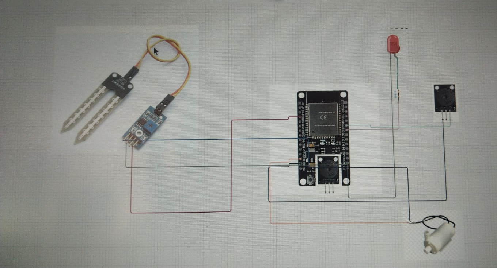
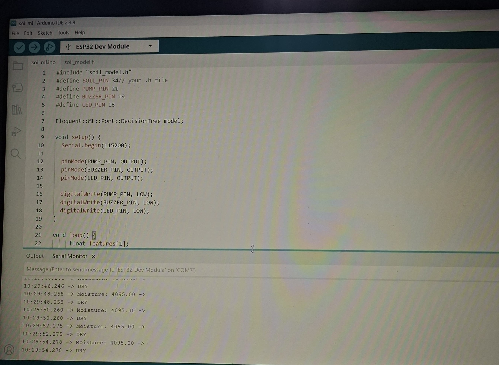

Automatically monitors soil moisture and decides whether irrigation is needed using a TinyML model running directly on the ESP32 microcontroller — turning the water pump on or off with no cloud connectivity required.
Traditional irrigation relies on fixed schedules or manual checks rather than actual soil conditions, which wastes water. I built this project to show that TinyML can bring real decision-making to embedded systems — using real-time soil data to water only when it's actually needed, cutting waste and reducing manual work.
Deploying a machine learning model on a resource-constrained microcontroller was the core challenge — the ESP32 doesn't have the memory or processing headroom of a computer, so a lightweight decision tree was the right fit rather than a heavier model. I trained it in Python on Google Colab, converted it to TinyML-compatible C++, and wired it into the ESP32 firmware.
The second challenge was picking a soil moisture threshold that actually matched reality — validating that the model's "dry" and "wet" predictions lined up with what the sensor was really reading. That took repeated testing and calibration before the pump only triggered when irrigation was genuinely needed.

